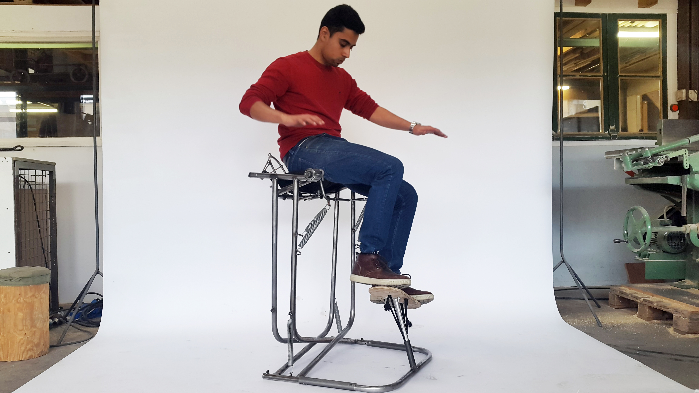
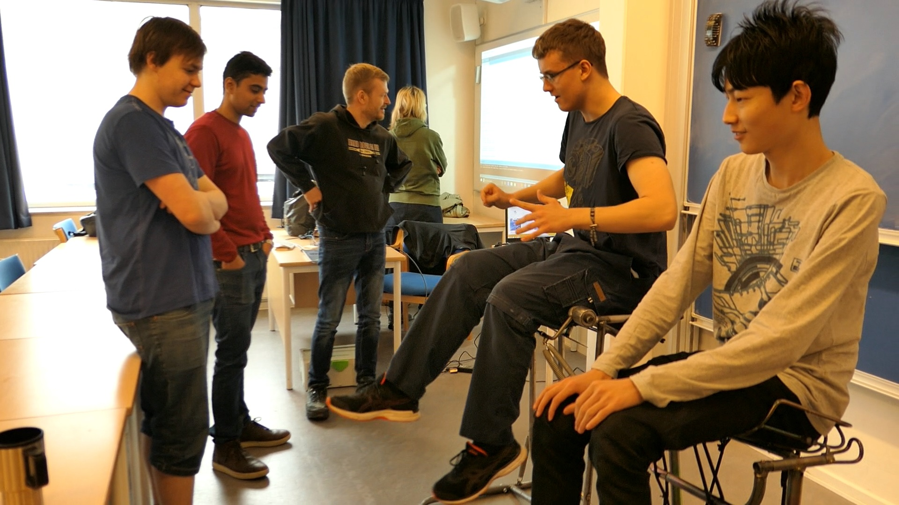
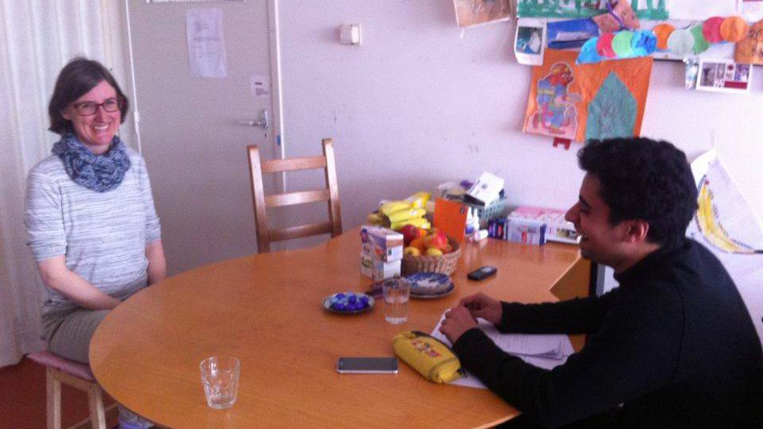
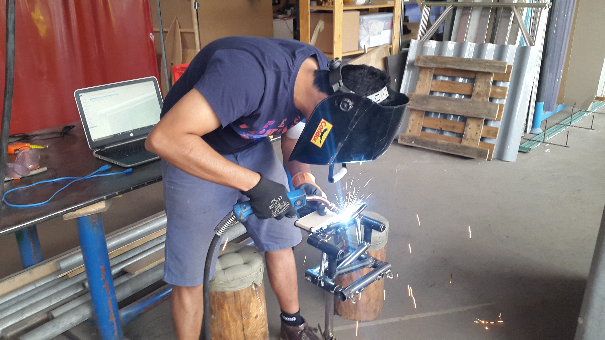
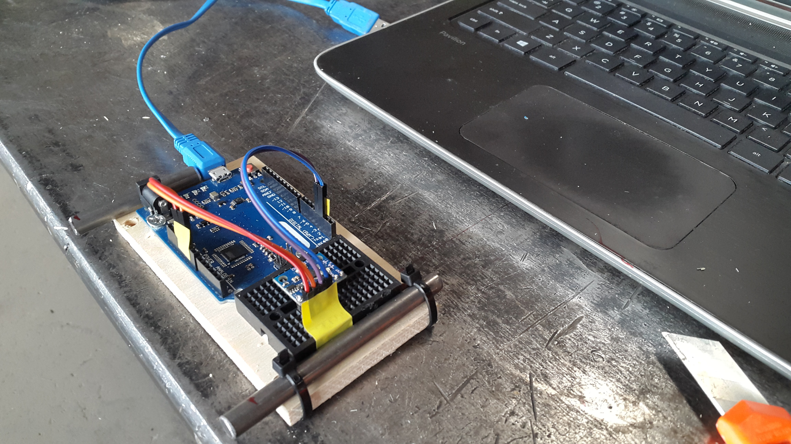

Final Grad Project

A moving device that fosters happiness and movement for people with chronic pain disorders
Large Body Moves

Neuroscience showed that large, natural movements helped people with chronic pain move freely with reduced pain signals.
Chronic Patients

showed the importance of movement, posture of the body. These insights helped build the movements of the device.
The Design Process

combined research at different stages with experiential feedback from the moving prototypes.
Prototype Collection
A collection of all the prototypes built by hand. Each iteration was tested and served inspiration for the next.
Visualizing Movements

To augment feedback, an accelerometer was connected to the device to map and visualize the movements.
Movement Rehabilitation
The device connected to a computer, can be used to control and aid large and slow movements for muscle stimulation.
❮
❯